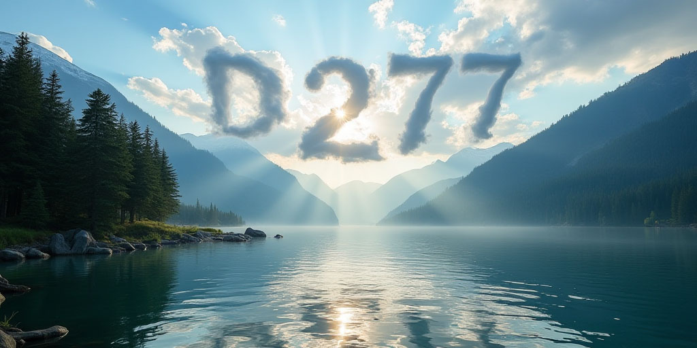
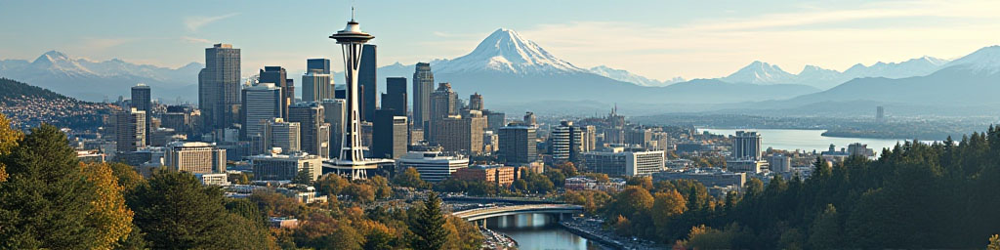

About Washington State
Washington State is located in the Northwest corner of the United States of America, in what is known as the Pacific Northwest. The state is well known for it's outdoor natural beauties, activities, culture, arts, thriving cities, tech, and of course its coffee. With amazing sites to see that you won't find anywhere else in the world, including the Space Needle, Pike Place Market, Mount Rainier, and more! Nicknamed the "The Evergreen State" due to the vast amount of evergreen trees throughout the state.
Washington is a progressive and thriving state that continues to grow through its people and by its people. Whether you're in Washington for business, leisure, a relaxing time in nature, or here to stay, you're sure to have a great time enjoying all the state has to offer.
Why Visit Washington?
There’s no place like Washington. Love the outdoors? Washington’s got you covered with countless trails and national parks. Into food and fun? Seattle’s got world-class dining, arts, and a lively night life to keep you entertained.
Looking to further your career? The state is ever growing and home to some of the largest global tech businesses in the world. Prefer a more relaxing time? Washington is home to many charming towns along the Puget Sound waterfront that offer a refreshing taste of neighborly friendliness and care.